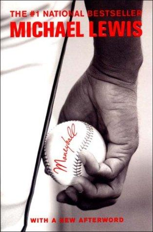

迈克尔·刘易斯（Michael Lewis）是当代最具影响力的财经非虚构作家之一，代表作包括《说谎者的扑克牌》（Liar's Poker）、《大空头》（The Big Short）和《闪光小子》（Flash Boys）。在职业生涯的早期，他发现了一个在主流财经世界之外的奇异故事：一支薪资预算仅为纽约洋基队三分之一的小城棒球队，如何连续三年打入季后赛？《魔球》出版于2003年，以奥克兰运动家队总经理比利·比恩（Billy Beane）的故事为主线，探索了数据分析如何颠覆一个依赖直觉和传统权威运行了一百多年的行业。
全书的核心冲突是两种认识论的碰撞。棒球圈的传统权威——球探、教练、老将——依赖目测经验判断球员价值：身材、气质、挥棒姿态、助跑步伐。而比恩和他雇用的哈佛经济学毕业生保罗·德波德斯塔（Paul DePodesta）则相信，球探的判断充满了可识别的系统性偏差，统计数据比人眼更能预测球员的真实贡献。他们发现了被市场严重低估的指标——上垒率（on-base percentage）——并据此以低廉的价格签下了被其他球队忽视的球员。这不只是一个棒球故事，而是一则关于信息套利的经典寓言：当市场对某类价值存在系统性误判时，能够率先识别并利用这一偏差的人，就能以更低的成本获得更高的回报。
刘易斯将这一故事讲述得扣人心弦，兼具新闻报道的精准与文学叙事的张力。球场内的比赛悬念、球探会议室里的世代冲突、比恩本人从一位被过度期待的天才球员沦落为失意老将后重新找到意义的个人弧线——这些叙事线索彼此交织，使一本本可能流于枯燥的统计学读物变得生动而余韵悠长。《人物》杂志称其为"有史以来最具影响力的体育著作"，《纽约时报》书评人珍妮特·马斯林写道，这本书"让你对棒球毫无了解也能领略其机智、精准与深刻"（"you need know absolutely nothing about baseball to appreciate the wit, snap, economy and incisiveness of [Lewis's] thoughts about it"）。
《魔球》在商业与投资界产生的影响远超体育圈。它向企业管理者提供了一个清晰的示例：当一个行业长期依赖惯例和经验运转，局外人带着数据和更清醒的分析框架进入，往往能发现被主流忽视的套利空间。查理·芒格将刘易斯视为他欣赏的少数非虚构作家之一，本书对定性直觉与定量数据之间张力的深入呈现，对任何思考"如何在信息不对称的市场中寻找优势"的投资者或管理者都具有持久的启发价值。2011年，本书被改编为同名电影，由布拉德·皮特主演。